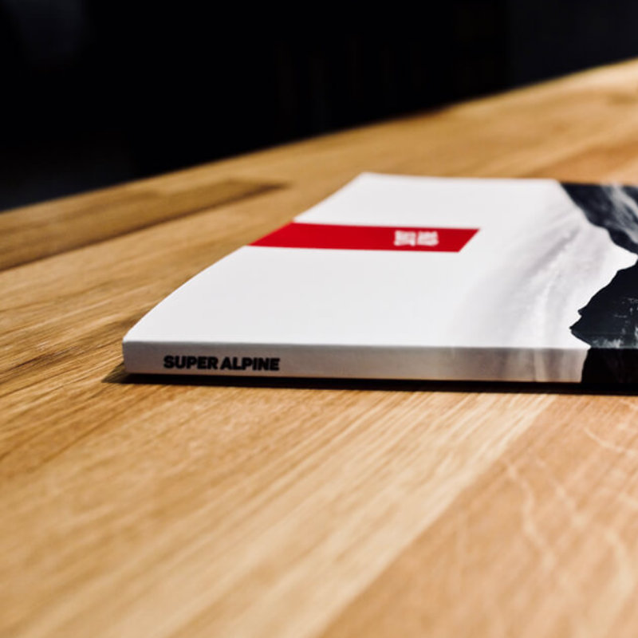

Andrew Revitt
Andrew Revitt Super Alpine magazine
The Super Alpine magazine is a journal of photographs and stories from high altitude. Over 75 photographs in colour and black and white. Featuring three sections, speed, mountains and the high life.
Specification
- 124 pages
- Perfect bound
- 260mm x 195mm
- Prototype
- Printed in the United Kingdom
- The cover is laminated FSC-approved 300gsm uncoated paper
- The inside is in full colour on FSC-approved 130gsm uncoated paper
More Information

The magazine is now available as a PDF download for £3.99
BUY PDF